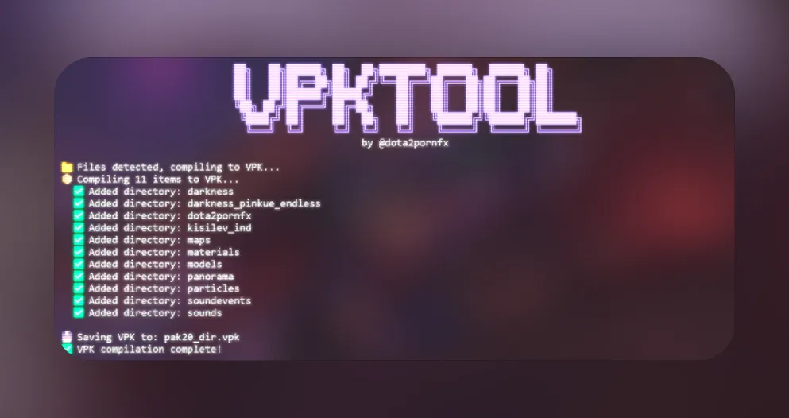
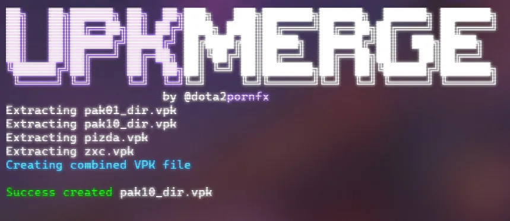
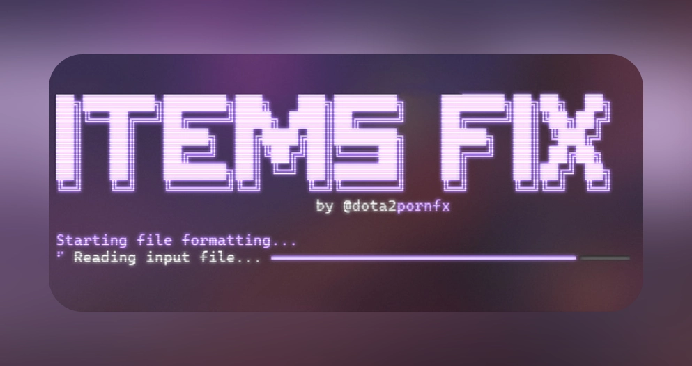
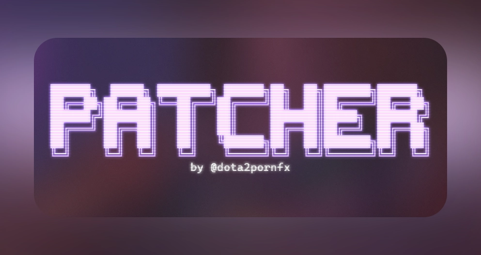
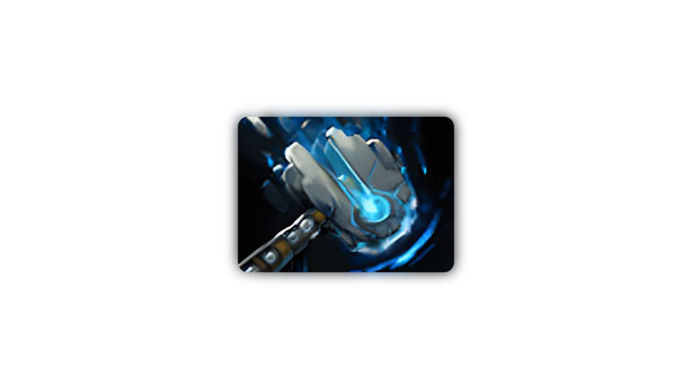
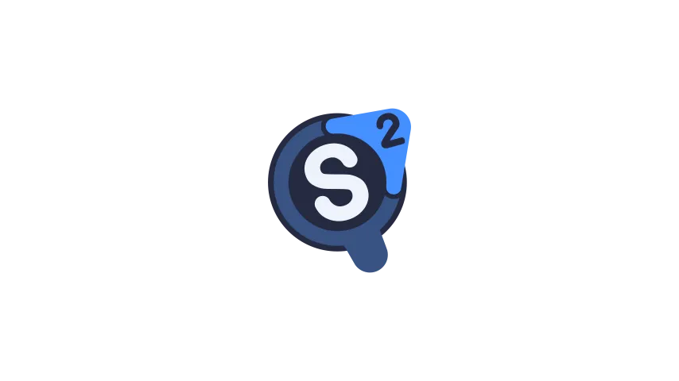
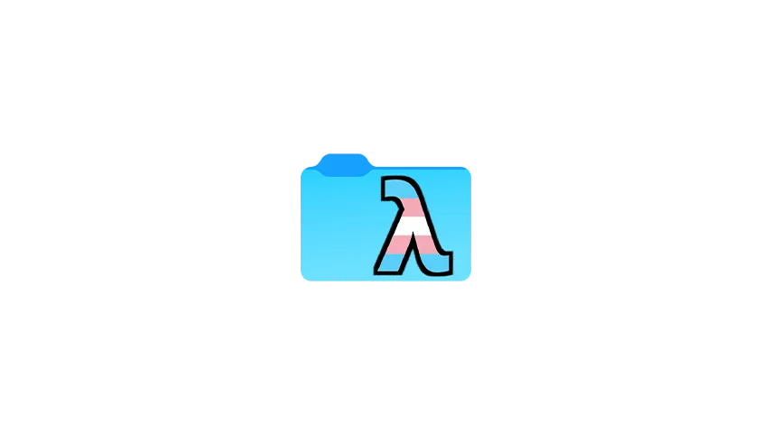
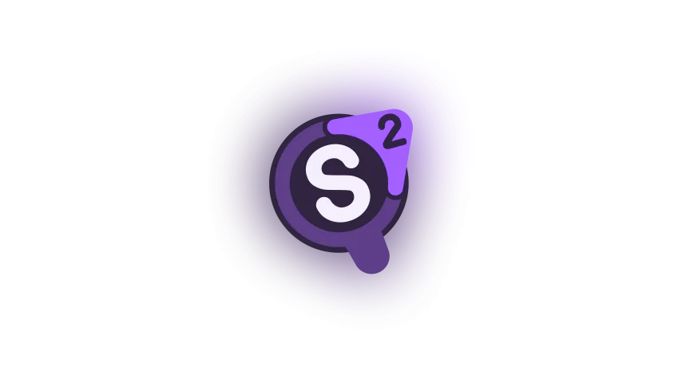

Dota 2 Tools
Various tools.
 Background Changer
Background Changer
VPKTool - Extract & Pack VPKs
VPKMerge - Combine VPKs
ItemsFix - Fix items_game structure
Patcher - Weather & More Compiler
Compiler Background Changer Linux
Background Changer Linux
Minify
Source2Viewer
VPKEdit Dota 2 Mod Manager
Dota 2 Mod Manager VPCF Editor
VPCF Editor
Better Source2Viewer